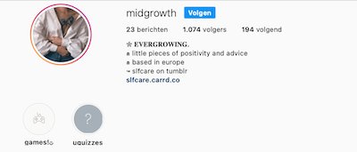
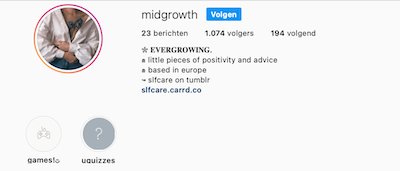

Je Kan Meer is een schoolproject van Brianne de Deugd voor het vak Internetstandaarden. Het is opvallend hoe de wereld is ingericht als het niet op jou is ingericht, en dat kan het moeilijk maken om je comfortabel te voelen in wie je bent. En als je dat al doet en actief op zoek gaat naar hulpmiddelen, voel je je vaak juist slechter. Dingen zoals een knoophaak of spalken worden geadverteerd als hulpmiddelen voor oudjes of geblesseerden, maar als persoon met een beperking val je natuurlijk niet in die categorieën. Dat kan je onzeker maken of zelfs laten schamen voor wie je bent en waar je hulp nodig hebt, en bij Je Kan Meer wil ik dat gevoel elimineren door jou in je waarde te laten, precies zoals je bent.
Het grootste doel van Je Kan Meer is toegankelijkheid: toegankelijkheid in de wereld, maar op een kleinere schaal natuurlijk toegankelijkheid in jouw leven. Realistisch gezien kan een mens niet alles, maar wat we als mensen wel moeten kunnen is meedraaien in de maatschappij, en zoiets begint thuis: wanneer je opstaat en een ontbijtje maakt, je tandenpoetst en je aankleedt. Wanneer je de deur uitgaat en de auto start, wanneer je naar de bushalte loopt en je laptop opent. Tijdens geen van deze handelingen moet jij het idee hebben minderwaardig te zijn. Daar probeer ik je bij te helpen.
Ook op sites zoals Tumblr en Instagram is Jij Kan Meer actief onder de namen 'Midgrowth' en 'Slfcare'. Deze pagina's zijn gericht op een internationaal publiek en zijn in het Engels. Lees meer hieronder!
 

Het Tumblr blog is begin 2020 van start gegaan en heeft per 4 oktober 2021 precies 24.474 volgers! Een hele prestatie dus. Maar dat is natuurlijk niet zomaar, sinds het begin post Je Kan Meer wekelijks positieve (en originele) berichten waarvan het de bedoeling is dat het mensen stimuleert het beste uit zichzelf te halen. Daarnaast kunnen mensen anoniem om advies vragen, of het nou om vriendschap gaat of het vinden van motivatie. Omdat de berichten vaak op andere platforms zoals Pinterest worden gedeeld, wordt het blog nog steeds populairder.
Instagram is natuurlijk super visueel, dus hier worden de Tumblr berichten vertaald naar een mooi beeld. Daarnaast is het Instagram account ook een stuk interactiever! Zo kan je de korte IGTV videos bekijken om spelletjes te spelen, quizzes doen en templates screenshotten om op je verhaal te delen. Zo is het Instagram account niet alleen iets om te bekijken, maar ook iets om deel van uit te maken. En dat willen we allemaal.